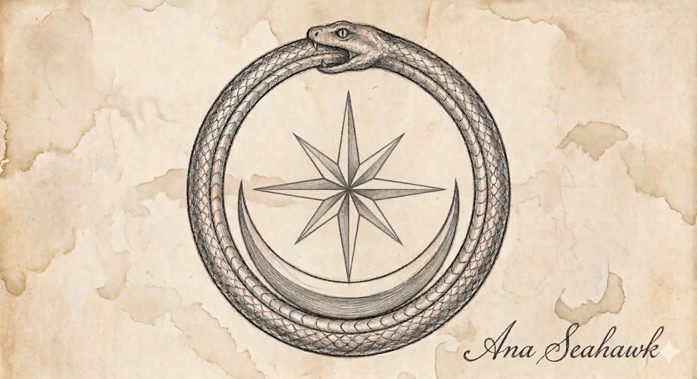

The journey
Follow the twelve-part spine from the historical ground through lived practice to the present state of the work.
The Reading Room · Volume I · In refinement
The study of what the body already produces, already knows and already carries.
A living, single-subject research archive. The index remains visible while its pages are refined. Each door will open when the piece behind it is ready.

Three ways in
Follow the twelve-part spine from the historical ground through lived practice to the present state of the work.
Enter through methods, apparatus, experiment reports and the measured record before returning to the wider history.
Use the Dictionary and Golden Lexicon whenever a term, symbol, claim tier or measurement needs orientation.
The reading path
Rooms off the path
Reading ethic, history, mythology, biological ground and the central thesis.
In refinementPractice structure, material forms, protocols and observation tools.
In refinementRun records, measurements, conditions and outcomes.
In refinementThe interpretive bridge between data, tradition and theory.
In refinementIntegrated understanding across multiple runs and lived observation.
In refinementThe archive’s key: terms, measurements, claim tiers and language guardrails.
In refinement